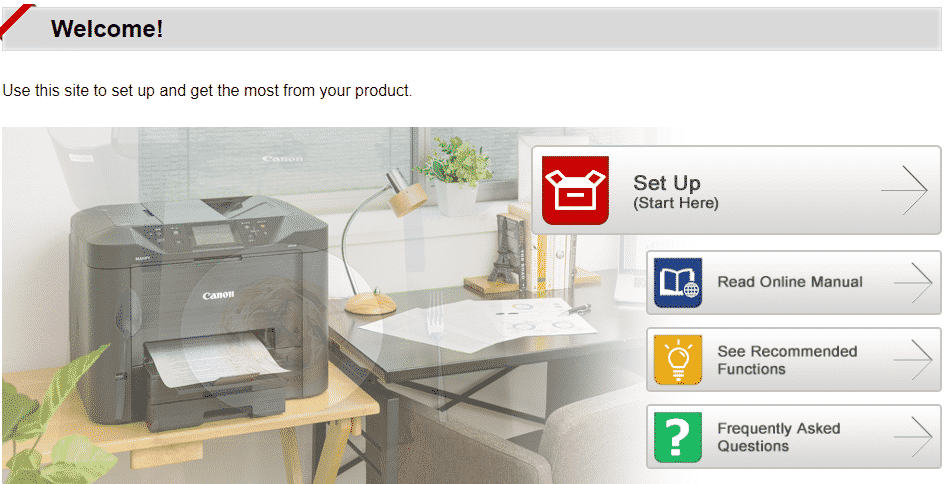
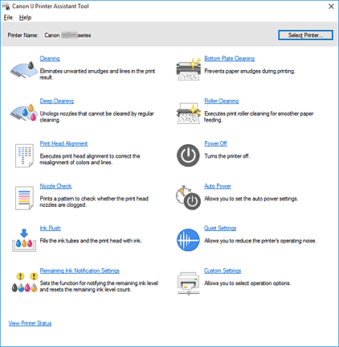
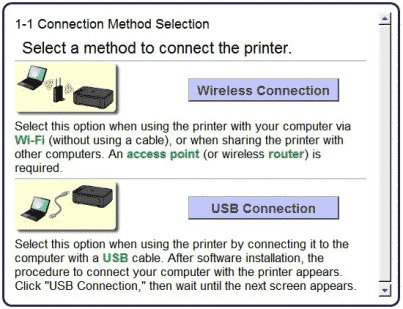
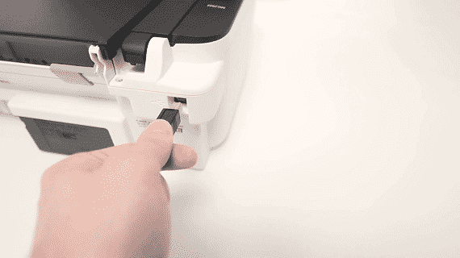
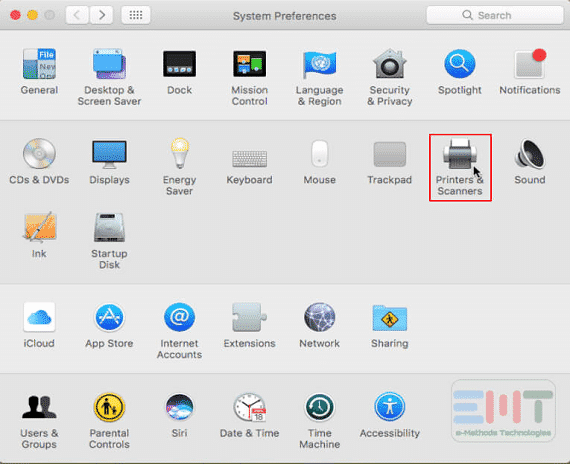

ij.start.cannon
Many printer brands manufacture different printers ranging from low to high in today’s era. Thus, amongst the various printer brands, canon is also amongst them. Canon printers fall in the list of well-known and popular printer brands. Moreover, they are famous for providing high-quality printing documents. But to take advantage of a canon printer, it is mandatory to setup the printer from the official website, i.e., “ij.start.cannon.” In addition to this, canon manufactures printers for home as well as office use. If you are searching for a robust and reliable printing machine, prefer using canon printers.
Canon printers are ideal for home and office use because they offer multiple latest and advanced printing features. Thus, from the canon printers, the user can quickly obtain high-quality printing documents easily and straightforwardly. Furthermore, Canon printers are worthy because they offer several connectivity options like Wi-Fi, USB, Bluetooth, and its application.
Whether you are looking for a printing machine for your home or workplace, Canon printers are the best fit to fulfill user’s requirements. Canon printers are available in a wide range; thus, one can choose the best one that meets their needs. Through the canon printers’ help, one can enjoy high-quality and fast printing performance at a low cost.
Canon printers ensure to deliver outstanding results to its users and provides them an excellent printing experience at their home or workplace. Therefore, to enjoy the high-quality and top-notch printing features of Canon printers, the users must accomplish the setup procedure via “ij.start.cannon.”
All Canon All-in-one printers are meant to meet the needs of the home as well as the workplace. Furthermore, all Canon printers are compatible with Windows, Android, and iOS operating systems. Along with this, canon printers are specially designed for better, fast, and high-quality document printing. Through the canon printers’ help, the user can easily accomplish their printing task quickly and conveniently.
To start with the process of setting up your Canon Inkjet Printer, follow the procedures below.
- The very first step in this process is to take a device, a laptop, or a PC.
- Now, open the web browser on your device you can opt for any web browser like Google Chrome, Internet Edge, or Mozilla Firefox.
- Locate the address bar in the browser that is at the top panel. In the address bar type “ij.start.cannon” and then, click enter.
- You will now be taken to the home page of the website. On the home page, you will see tabs for various procedures. You have to click on the “Set Up” icon.
- When you click on it you are taken to a new window. Here you have to enter your model number. You can either type your model number manually or you can use the click select option that is available in the lower panel on the same page.
- Once you enter the model number and click enter, the setup instructions for your particular model will pop-up. Follow the steps prompted on your screen.
Download Canon Printer Driver via ij.start.cannon
The user can easily download the Canon printer driver from the official website, i.e., “ij.start.cannon.” Therefore, to make it simple for all users, we have provided a detailed guide through which the user can easily download the Canon printer driver immediately and straightforwardly.

For Windows
- The users must open the internet browser.
- Then in the address bar, search for “ij.start.cannon”.
- After that, the official page will get open on the system’s screen.
- Then tap on the “Setup” icon.
- After this, the users need to enter the printer model.
- Then tap on the “Go” button.
- After that, click on the “Start” icon.
- After that, the users should follow the on-screen prompts to prepare the printer.
- Then the download link will appear on the screen.
- Now tap on the download button.
- After this, the “.exe” file will start downloading.
- Now once the file gets downloaded, then open the downloaded file.
- After this, the “User Account Control” pop-up will open on the screen.
- From there, click on the “Yes” button.
- After that, the “start setup” window will appear on the screen.
With the help of these steps presented above, it would become easy for all users to download the Canon printer drivers. Thus, when the driver gets downloaded, then proceed with the setup process described below.
For Mac
- Firstly, open any web browsers such as Safari, Firefox, or any other on the Mac system.
- After this, type “ij.start.canon” in the browser’s address bar.
- Then the official page will appear on the screen.
- After that, the users need to click on the “Setup” option.
- Now in the search field, enter the printer’s model.
- After that, click on the “Go” button.
- After this, click on the “Start” icon.
- Now follow the on-screen instructions for preparing the printer.
- Then on the screen, the “download” link will appear.
- So, click on the download button.
- After this, the “.dmg” file will start downloading.
- Now, wait for the file to download completely.
- Then open the downloaded file.
- After that, the “User Account Control” pop-up will appear on the screen.
- Then hit on the “Yes” icon.
- Now the “Start Setup” window will appear on the screen.
Thus with the help of the steps mentioned above, the user can quickly download the drivers on their mac system via “ij.start.cannon” Therefore, after completing the downloading procedure, move ahead with the installation procedure of canon printer drivers.
Install Canon Printer Driver via ij.start.cannon

For windows
- Click on the “Start setup” option.
- After this, click on the “Continue” option.
- Then tap on the “Next” button.
- Note: It will acquire the detailed latest software and drivers.
- After this, the users must “Select country or region.”
- Then tap on the “Next” button to proceed further.
- After this, the “License Agreement” popup will appear on the screen.
- Note: Carefully read them and hit on the “Yes” button.
- Then click on the “Agree” option.
- Now it will start checking the printer status.
- Then “Select the connection method.”
- There will be three options available, i.e., “Wi-Fi Connection,” “Wired LAN Connection,” “USB Connection.”
- After this, the users must “Select Connection Method.”
Wi-Fi connection

- Select “Wi-Fi connection.”
- After that, click on the “Next” button.
- Now make sure that the printer is turned “ON.”
- Then click on the “Next” option again.
- Note: It will start detecting the printer.
- Now the name of the printer will display on the screen.
- Then select the printer and click on the “Next” button.
- Then follow the on-screen prompts.
- Note: For all users, there is an “Alternative Methods” option available.
- If any user cannot set up the printer via a wireless connection, tap on the “Alternative Method.”
Wired LAN Connection (Ethernet Cable)
- The users should tap on the “Wired LAN Connection (Ethernet Cable)” option.
- Now, click on the “Next” button.
- After this, check that the printer is plugged in correctly and is in working condition.
- Then hit on the “Next” button.
- Now the name of the printer will appear on the screen.
- Note: If the name does not appear on the screen, then the users should tap on “Search for IP address” to search for the printer.
- If the user clicks on the “Search for IP address,” then follow the prompts and then click on the “Next” method.
- After this, the users should click on “Next” to prepare the printer’s connection.
- Now it will detect the printer.
- After this, select the printer and then click on the “Next” button.
- Note: Now, the user will get redirected to the “Setup Guide” window. So, after this, follow the instructions to setup a printer.
- Note: If the printer fails to connect, then tap on the “Troubleshooting” option.
- After this, click on the “Next” option.
So, through these steps, it would get easy for all users to accomplish the setup procedure.
USB Connection (USB Cable)

The users should tap on the “USB Connection (USB Cable)” option to accomplish the setup procedure through “ij.start.cannon.”
- Click on the “USB Connection (USB Cable).”
- Then tap on the “Next” option.
- Now the drivers will start installing on the system.
- Note: Wait for the drivers to install completely.
- After this, click on “Install this driver software anyway.”
- Now the driver will get installed on the system.
- Note: Ensure that the printer is connected correctly with the system via USB cable.
- Note: The users must click on “Troubleshooting” if they cannot connect the printer with the system.
- After clicking on the “Troubleshooting” button, the users will get redirected to a new page with detailed information about the printer connection process.
- Then the users should follow the prompts and get familiar with the printer connection procedure.
After this, follow the on-screen instructions, the user can easily complete the setup procedure via “ij.start.canon”. Therefore, once the setup gets completed, the users need to perform a “Test Page.” Thus, the user will get sure that the printer is connected and is working properly.
Install Canon Printer Driver via ij.start.cannon
For Mac
- Tap on the “Start Setup” button.
- Then, hit on the “Continue” option.
- After that, click on the “Next” option.
- Note: The system will collect the details of the latest software and drivers.
- Now the users should “Select Country or Region.”
- Then to proceed further, hit on the “Next” button.
- After that, the “License Agreement” window will open on the screen.
- Read the details carefully and click on the “Yes” option.
- After that, click on the “Agree” option.
- Then it will start checking for the printer status.
- After that, the users should “Select connection Method.”
- Then, three options will display on the screen, i.e., “Wi-Fi Connection,” Wired LAN Connection,” “USB Connection.”
- Then select the preferred connection method.
Below mentioned are the steps to install canon printer drivers via different methods.
Wi-Fi Connection

- Choose “Wi-Fi Connection.”
- Then hit on the “Next” option.
- Note: Assure that the printer is turned “ON.”
- After that, again click on the “Next” option.
- Note: It will detect the printer.
- After this, the printer’s name will appear on the screen.
- Then choose the printer and then tap on the “Next” button.
- After that, follow the on-screen instructions.
- Note: There is an “Alternative Methods” option available for all users.
- The users who fail to set up the printer through the wireless connection can click on the “Alternative Method.”
Wired LAN Connection (Ethernet Cable)
- Another available option “Wired LAN Connection (Ethernet Cable),” so click on it.
- Then tap on the “Next” option.
- After that, make sure that the printer is plugged in correctly and properly working.
- Then click on the “Next” button.
- After that, the printer’s name will appear on the screen.
- Note: If the name does not display on the screen, then tap on the “Search for IP address” to search for the connected printer.
- If the user clicks on “Search for IP address,” they must follow the on-screen prompts and then click on the “Next” method.
- Then for preparing the connection on the printer, click on the “Next” option.
- After this, it will detect the printer.
- Now select the printer and click on the “Next” option.
- Then the “Setup Guide” will open on the screen.
- Now to set up a printer, follow the on-screen prompts.
- Note: If any user cannot connect the printer, they should click on the “Troubleshooting” option.
- Now, a “New Window” will open having the connection procedure details.
- Then hit on the “Next” option.
By applying these steps, the user can easily accomplish the setup procedure.
USB Connection (USB Cable)
Follow the procedure provided below to set up the printer via “ij.start.cannon.”
- Tap on the “USB Connection (USB Cable)”
- Then click on the “Next” button.
- After this, the driver installation procedure will start.
- Note: Then wait for the driver to install correctly.
- Now tap on “Install this driver software anyway.”
- By doing this, the printer driver will get successfully installed on the system.
- Note: Confirm that the printer is connected correctly with the system through the “USB Cable.”
- Note: If any user cannot connect the printer to the mac, they should click on the “Troubleshooting” option.
- Once the user clicks on the troubleshooting option, they will get redirected to a new page, including the printer connection process details.
* Hardware Setup
- Before you do the setup, you first have to complete the process of hardware set up your device
- Unbox your printer in the same manner as you see in the video tutorial for your printer that is available on the site, ij.start.canon.
- Using the power cable, connect your printer device to the power supply and turn your printer on.
- You now have to save the initial settings of the printer. This means you have to set your preferences like language, date, location, and time in the control panel.
- The tutorial in the video at ij.start.cannon will guide you with the steps to load the cartridge and paper follow them carefully.
Setting up your printer device
- After you have done the Hardware Setup and downloaded the printer driver software as per the instructions are given in “ij.start.cannon”, opt for the next step i.e., setting up your device part.
- To start with this process you first have to make sure that your printer is turned on. For this, check if the green light on your device is turned on.
- After Double-clicking on the downloaded software, the “User Control Wizard” will appear on your screen. Click the “Run” button here to allow the software to run on your screen.
- You now have the “Welcome Window” of the driver software. Click “Next”.
- You now have to follow a step by step setup guide for your setup guide. You now have to follow this guide the same way you followed the guide at ij.start.cannon.
- A screen will be displayed on your computer asking you to select between a USB or wireless connection, please select “Wireless Connection”.
- In the next window that appears on your screen, click the “Connect to Network” icon.
- In the next screen, asks you to opt for the connection method that you want to opt for. This method generally, uses Wired or wireless. Here, you have to click the “Cabless Setup” icon.
- When the “Connection via Cableless setup” screen appears you have to hold down the printer’s Wi-Fi button. Do this until the orange alarm lamp flashes 2 times, release the button immediately after the second flash.
- Confirm that the Blue color Wi-Fi lamp flashes quickly and Click the “Next” button. In this process, your network connection gets “Disable” temporarily. Wait for some time to allow your printer device to connect.
- The next window on your Device now prompts you to enter your geographical region. After selecting, click “Next”.
- Consequently, on the next screen, you have to select your place of residence and then click on “Next”.
- The next screen appearing is the “Software Installation List”. Here, you need to select the Canon software you wish to install. If you have any confusion about which software you want to install at this stage, install all available, you can always uninstall the one you don’t need. After selecting the software, click “Next”.
- You are now taken to the “License Agreement Document”. Go through this document carefully, later, click “Yes”, if you agree with all the terms.
- Consequently, an “Allow Install Wizard Process” window appears on your screen. Again, click the “ Next” button.
- The window that follows, indicates the model of your printer and the name (or SSID) of your wireless network. Here click “Complete”
- Eventually, now you will see that your Blue color lamp stops blinking and by this, your Setup is Complete for Windows Users.
Mac Users need a few more steps:-
-
- The Next window, prompts you to add your printer to connect it to your Mac device. Click on the “Add Printer” to proceed further.

- Consequently, on the next screen, you will see the available printer devices. From this list, select the model number of your printer device. The same one that you entered in ij.start.cannon to start the whole process. Then, click the “Add” button.
- To complete the process, now click “Next”.
- With this, the Mac Cableless Setup completes.